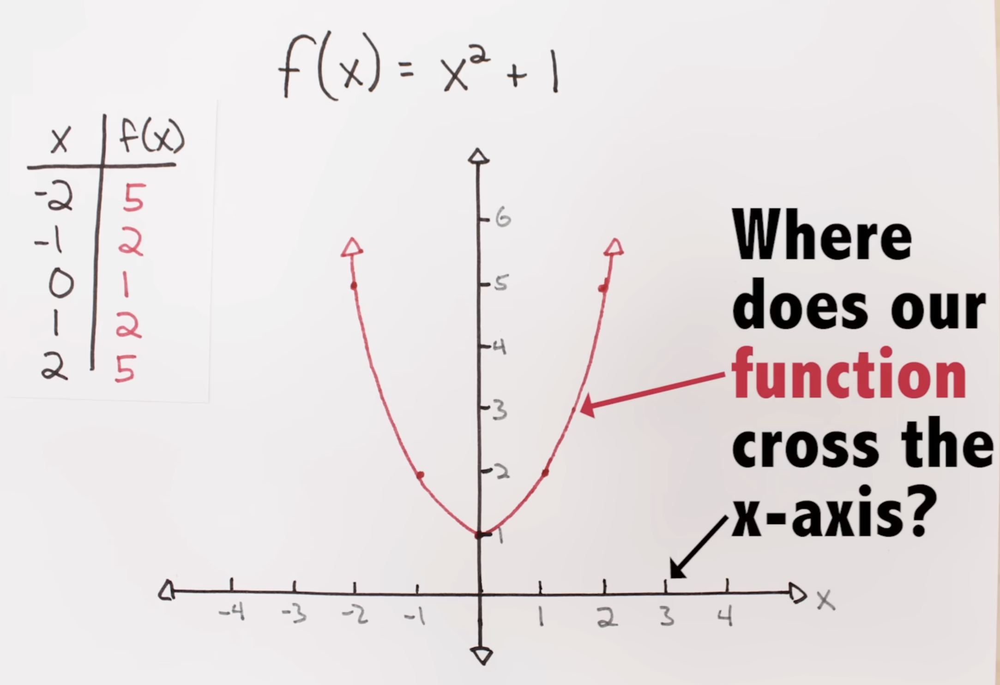
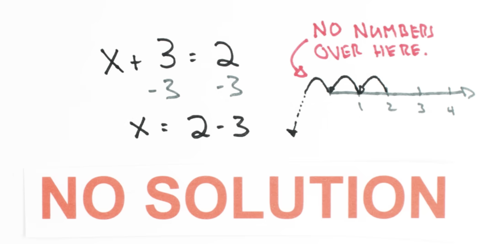
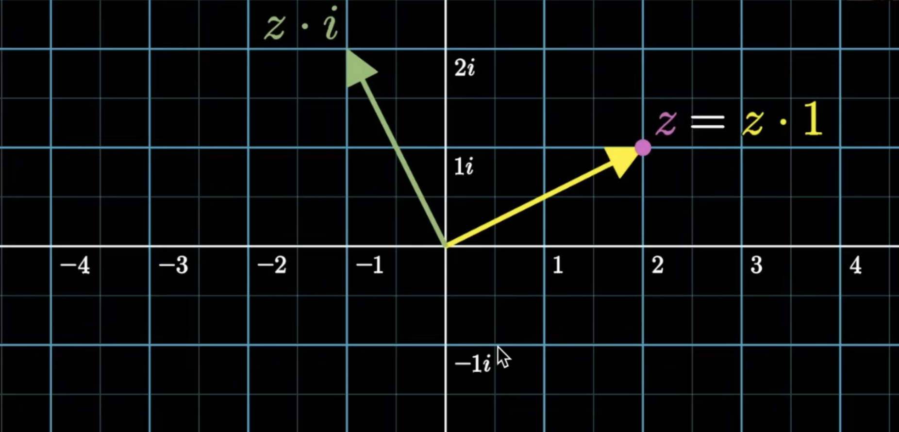

Fundamentals of Complex Numbers
Introduction
Let's say we're given the function \(f(x) = x^2 + 1\). We can graph our function and get a nice parabola. Now let's say we want to figure out where the equation equals zero we want to find the roots. On our plot this should be where the function crosses the \(x\)-axis. As we can see, our parabola actually never crosses the \(x\)-axis, so according to our plot, there are no solutions to the equation \(x^2 + 1 = 0\).

But there's a small problem. A little over 200 years ago a smart guy named Gauss proved that every polynomial equation of degree \(n\) has exactly \(n\) roots.Our polynomial has a highest power, or degree, of \(2\), so we should have two roots. And Gauss' discovery is not just some random rule, today we call it THE FUNDAMENTAL THEOREM OF ALGEBRA.
What Gauss is telling us here, is that there are two perfectly good values of \(x\) that we could plug into our function, and get zero out. Where could these \(2\) missing roots be?
The short answer here is that we don't have enough numbers. We typically think of numbers existing on a \(1\)-dimensional continuum- the number line.

But this system is incomplete. And our missing numbers are not just further left or right, they live in a whole new dimension. Algebraically, this new dimension has everything to do with a problem that was mathematically considered impossible for over two thousand years: the square root of negative one, \(\sqrt{-1}\).
When we include this missing dimension in our analysis, our parabola gets way more interesting. Now that our input numbers are in their full \(2\)-dimensional form, we see how our function \(x^2 + 1\) really behaves.

So, why is this extra dimension that numbers possess not common knowledge? Part of this reason is that it has been given a terrible, terrible name. A name that suggest that these numbers aren't ever real! Gauss proposed these numbers should instead be given the name Lateral Numbers.
Early humans really only had use for the natural numbers, that is \(1, 2, 3, \ldots\). This makes sense because of how numbers were used. So to early humans, the number line would have just been a series of dots. As civilizations advanced, people needed answers to more sophisticated math questions– like when to plant seeds, how to divide land, and how to keep track of financial transactions. The natural numbers just weren’t cutting it anymore, so the Egyptians innovated and developed a new, high tech solution: fractions.
Fractions filled in the gaps in our number line, and were basically cutting edge technology for a couple thousand years. The next big innovations to hit the number line were the number zero and negative numbers, but it took some time to get everyone on board. Since it’s not obvious what these numbers mean or how they fit into the real world, zero and negative numbers were met with skepticism, and largely avoided or ignored.
Without negatives, simple algebra problems like x + 3 = 2 have no answer. Before negatives were accepted, this problem would have no solution, just like we thought our original problem had no solution.

Definition
A complex number is a number that can be written in the form \(a + bi\), where \(a\) and \(b\) are real numbers, and \(i\) is the imaginary unit defined by \(i^2 = -1\).
The real part is \(a\), and the imaginary part is \(b\). For example, in \(3 + 4i\), the real part is \(3\) and the imaginary part is \(4\).
The Complex Plane
One beautiful way to visualize complex numbers is using the complex plane (also called the Argand plane). Instead of plotting points on a number line, we plot them on a \(2\)D plane:
-
The horizontal axis represents the real part
-
The vertical axis represents the imaginary part
So the complex number \(a + bi\) corresponds to the point \((a, b)\) in the plane. This geometric interpretation makes many operations on complex numbers intuitive and visual!
Why is the Imaginary Axis perpendicular?
The key insight is that multiplying by a complex number is essentially a rotation operation. Let's see why this forces the imaginary axis to be perpendicular to the real axis.
Start with the real number \(1\) on the real axis. What happens when we multiply by \(i\)? We get \(1 \cdot i = i\). But what does this mean geometrically?
Since \(i^2 = -1\), we have:
-
\(1 \cdot i = i\) (one rotation)
-
\(i \cdot i = i^2 = -1\) (two rotations brings us to \(-1\))
-
\(-1 \cdot i = -i\) (three rotations)
-
\(-i \cdot i = -i^2 = 1\) (four rotations brings us back to \(1\))
This suggests that multiplying by \(i\) rotates by \(90°\) (a quarter turn)!
If multiplying by \(i\) rotates by \(90°\), then \(i\) itself must be positioned \(90°\) away from \(1\) on the real axis. This means \(i\) lies on a line perpendicular to the real axis— the imaginary axis!
More generally, multiplying any complex number by \(i\) rotates it by \(90°\) counterclockwise. This rotation property is fundamental to complex numbers and explains why we need a \(2\)D plane: the real numbers live on one axis, and multiplication by \(i\) naturally creates a perpendicular axis for the imaginary numbers.
In the figure below, consider a complex number \(z = 2 + i\). Multiplying by \(1\) gives the same \(z\), but multiplying by \(i\) rotates \(z\) by \(90°\) counterclockwise.

Example: What is the complex number \(z\) such that multiplying by \(z\) rotates any complex number by \(30°\) counterclockwise?
Solution: To rotate by \(30°\) counterclockwise, we need a complex number positioned on the unit circle at a \(30°\) angle from the real axis. This ensures the rotation preserves distances (magnitude \(1\)).
On the unit circle, a point at angle \(30°\) has coordinates \((\cos(30°), \sin(30°))\). In the complex plane, this corresponds to the complex number:
Converting \(30°\) to radians: \(30° = \frac{\pi}{6}\) radians, so we can also write:
Evaluating the trigonometric functions:
So in expanded form:
But we'll keep it in the compact cis form: \(z = \text{cis}(30°) = \text{cis}\left(\frac{\pi}{6}\right)\).
Multiplying any complex number by \(z = \text{cis}(30°)\) will rotate it by \(30°\) counterclockwise while preserving its magnitude!
Deriving some Trigonometric Identities
Complex numbers provide an elegant way to derive trigonometric identities! Let's use the example of finding \(\cos(75°)\) to derive the general formula for \(\cos(A + B)\).
Example: We can write \(75° = 45° + 30°\).
Think of \(\text{cis}(45°)\) and \(\text{cis}(30°)\) as rotation operators. When we multiply any complex number by \(\text{cis}(45°)\), we rotate it by \(45°\) counterclockwise. Similarly, multiplying by \(\text{cis}(30°)\) rotates by \(30°\). Now consider what happens when we apply both rotations in sequence. Start with any complex number \(z\).
First rotate by \(45°\): \(z \cdot \text{cis}(45°)\).
Then rotate by \(30°\): \((z \cdot \text{cis}(45°)) \cdot \text{cis}(30°) = z \cdot (\text{cis}(45°) \cdot \text{cis}(30°))\). The net effect is a rotation by \(45° + 30° = 75°\).
This means:
In general, composing two rotations is equivalent to a single rotation by the sum of the angles. This is why multiplying complex numbers adds their angles— you're combining the rotation operations!
Let's expand both sides to see the algebraic details.
Expanding the product:
Since \(i^2 = -1\):
We can equate the real and imaginary parts:
Real part:
Imaginary part:
The same reasoning works for any angles \(A\) and \(B\)! Since:
Equating real and imaginary parts gives us:
These are the angle addition formulas for cosine and sine, beautifully derived using complex numbers!
Example: For what values of \(z\) does \(z^2 = i\)?
Solution:
We want to find complex numbers \(z\) such that \(z^2 = i\). From a rotation perspective, we know that \(i = \text{cis}(90°)\) (since \(i\) is positioned at \(90°\) on the unit circle).
If \(z = \text{cis}(\theta)\), then \(z^2 = \text{cis}(\theta) \cdot \text{cis}(\theta) = \text{cis}(2\theta)\) (squaring doubles the angle).
So we need:
This means \(2\theta = 90° + 360°k\) for any integer \(k\) (since angles are periodic with period \(360°\)).
Solving for \(\theta\):
For \(k = 0\): \(\theta = 45°\), so \(z = \text{cis}(45°)\)
For \(k = 1\): \(\theta = 225°\), so \(z = \text{cis}(225°)\)
For \(k = 2\): \(\theta = 405° = 45° + 360°\), which is the same as \(k = 0\) (angles repeat every \(360°\)).
So there are exactly two distinct solutions:
Solution 1: \(z = \text{cis}(45°) = \cos(45°) + i\sin(45°) = \frac{\sqrt{2}}{2} + i\frac{\sqrt{2}}{2} = \frac{1 + i}{\sqrt{2}}\)
Solution 2: \(z = \text{cis}(225°) = \cos(225°) + i\sin(225°) = -\frac{\sqrt{2}}{2} - i\frac{\sqrt{2}}{2} = -\frac{1 + i}{\sqrt{2}}\)
This shows that every complex number (except \(0\)) has exactly two square roots, positioned \(180°\) apart on the complex plane!
We can use the same idea of squaring a complex number to derive the double angle formulas for cosine and sine!
Example: Let \(z = \text{cis}(\theta) = \cos(\theta) + i\sin(\theta)\).
From the rotation perspective, we know that \(z^2 = \text{cis}(2\theta)\) (squaring doubles the angle). So:
But we can also compute \(z^2\) algebraically by expanding:
Since \(i^2 = -1\):
Since both expressions equal \(z^2\), we can equate the real and imaginary parts:
Real part:
Imaginary part:
These are the double angle formulas! Notice how elegantly they emerge from the simple act of squaring a complex number on the unit circle.